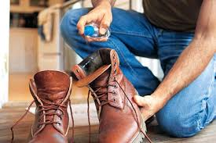
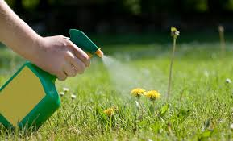

Dhyara
Because You're Worth It!

Amazing Uses of Vodka
There is no denying that vodka is one of the most popular alcoholic beverages across the globe and it is not hard to fathom why. Vodka is actually neutral having no strong smell and you can easily mix it with a bunch of other alcoholic or non-alcoholic beverages. But apart from serving as a leading drink, vodka has endless other usages too. Well, this is not about using vodka to make fantastic cocktails but we are concentrating on useful ways that you can apply in your everyday life to be benefitted. There are tonnes of usages of vodka in your everyday life and it is hard to cover them all so we have chosen the best ones for you that you can easily apply in your daily life.
1. Use Vodka to treat your toothache
Toothaches are one of the nastiest pains that we face in our lives. But vodka can be a real help to provide you with the perfect remedy. If you are witnessing toothache then pour some drops of vodka on a small piece of cotton and place it on the gum over your sore tooth. Give it some time and vodka will slowly alleviate your pain.

2. Vodka is a great deodorizer
After having few vodka shots if you hurl it on your clothing then it is an indication that you are done for the night but in reality, vodka acts as a great deodorizer. Spray diluted vodka on your old smelly sweaters or on the pair of smelly shoes to get rid of the awful odour. Vodka kills the fleet of odour causing bacteria on the spot thus relieve your clothing or shoes from awful smell. Moreover, it does not leave any chemical like the smell on your clothing since vodka does not smell harsh.3. Get dandruff free healthy hair
Vodka is not just good for the mood; it is also good for your hair too. Take vodka in a shot glass and no do not drink it rather mix it with a glass of water and apply it on your wet hair after shampooing your hair. Rinse it well on your hair then wash it off with clean water. It will clear any leftover shampoo from your scalp and will also prevent dandruff from building up. You can also use vodka with your conditioner. It will help you to reduce the pH level of the conditioner thus will provide you with soft and shiny hair.
4. Make your windows clean without chemicals
Why will you use soaps and cleaners with harmful chemicals when you have a great alternative? Use vodka instead. Soak a dry cloth in vodka and mop your windows to give them a shiny spot free look. You can also spray diluted vodka on your windows and fixtures and wipe them with a clean dry cloth to clean them up.

5. Kill the weeds
Vodka is really effective in killing weeds with a little assistance from the sun. The persistent weeds destroy the look of your garden and using chemical sprays for killing the weeds simply endanger the health of you and family. Thus, use vodka to bid farewell to those nasty weeds. Mix one cup of vodka with two cups of clean water and add few drop of the dish washing soap in it then spray it on the weeds on a sunny day. The mixture will act as a dehydrating agent and the sunlight will make the process of dehydration faster thereby killing the weeds.6. Use it as an aftershave and bug repellent
The antiseptic property of your aftershave is due to the presence of alcohol in it and talking about alcohol vodka has it in perfect balance. Thus, apply some diluted vodka on your skin after shaving and see it do wonders for your skin.Vodka is also claimed to be an effective bug repellent. Pour vodka in a bottle and also some lavender oil to add scent to it and get rid of bugs. Spray it all over the body to keep the bugs away.

7. Cure poison ivy and also a jellyfish sting
When your skin comes in contact with poison ivy there are high chances of getting long-lasting rashes . It contains urushiol oil that is responsible for giving that itchy sensation which is unbearable. In order to fix the irritations, pour some vodka on the rashes and get immediate results. It will rinse away the unwanted chemical and thus renders relief.However, jellyfish stings are dangerous. Instead of thinking about alternative methods, try and use some vodka. It will sooth the sting in 10 to 20 minutes.
Thus, you can see that vodka has a multitude of different uses in your household. There are many other applications of vodka that are highly effective. Use the tips given above and use vodka in your everyday life to get the best remedies.